红石炮教程完整版
来源：红石炮教程完整版(1).docx
整合者：一氧化硫
本教程为对ps01017,恩氟烷瑞，Q43，RCT等所制作教程的整合和注解
不懂之处可于群内进行讨论
欢迎转载，但随意改动整合者等内容的憨批没有母亲
前言
本教程分为“基础”和“进阶”两部分。
“基础”指必须要掌握的，每个炮党应须知的，不掌握无法继续向下研究的部分;而“进阶”则指有分支的，不一定要掌握的部分（如某个恶心人的特性，在不注重精度的炮之中，并没有什么卵用）
本教程仅作整合和注解
推荐学习
贴吧
红石电路吧精品贴
Minecrafrtnt炮吧精品贴
B站
什么都不会的苟鑫森
红石科技搬运组
恩氟烷瑞
AN-94
邪恶的瓜君
Q群
RCT 473392352
该群大佬贼多，问他们比问我靠谱多了
其他
Minecraft wiki
红石圈必知常识
- 红石分七大领域：生电，械电，数电，模电，炮，绿萌，红乐
红石与指令为完全不同的两个领域，在别人的红石作品或话题下谈论“指令能轻松做到”是对别人的极大不尊敬。
- 在讨论时请勿问诸如“比较器有啥用”“甘蔗机咋做”此类无意义问题，网上有办法找到的先去网上找，找不到的比如“高度衰减的解决方法”这种问题再来问。
- 很多红石群通过女装可以进内群（划掉）
- TIS可以吹，但是不要瞎吹，谁再给爷吹珍珠炮/屠龙炮爷一定往死里喷。
此下内容来自minecraft wiki
信号与脉冲
红石电路能够产生信号——“有/无信号”时称为“1/0”、“真/假”或“高电平/低电平”，实际上是方块更新的连锁反应。
上边沿/上升沿指红石信号由无到有的变化瞬间；下边沿/下降沿指红石信号由有到无的变化瞬间。
相（Phase）代表相位，指逻辑代数中的“相同”与“相反”（例如“1”与“0”互为反相）。
当信号出现一个较为短暂的“0-1-0”过程，该过程通常被称为脉冲（或正脉冲。“1-0-1”的过程被称为负脉冲）。脉冲持续的时间长度被称为名脉冲的长度。
信号强度
信号强度为0到15的整数。红石线能向相邻的红石线传导信号，但每传导1格，信号强度就降低1。因此，连续的红石线最远能将信号传到15格远。为了传输更远，你可以使用红石比较器来保持信号强度或使用红石中继器将信号强度加至15。
信号强度只会因为红石线之间的直接传导而衰减，但也可以通过测重压力板、阳光探测器或红石比较器直接控制输出不同的信号强度。
红石比较器实际上可以接受和输出超过15强度的信号。[仅Java版]如命令方块的成功次数超过15或容器内的物品超过堆叠限制，红石比较器会把它们作为强度超过15的信号进行比较或作差后输出。
充能
部分方块能够被充能及解除充能。当红石信号作用于一个方块时，如果这个方块毗邻的所有机械元件都可以被激活，那么这个方块就被称为实体方块，这个行为被称为充能。被充能的方块叫做充能方块。实体方块通常都是不透明方块。
强充能与弱充能
充能又分为强充能和弱充能：
- 强充能的方块可以激活毗邻的红石线。实体方块可以被电源及中继器、比较器强充能，红石块可以强充能自身。被强充能的方块所表现性质和红石块大体相同，但是红石块可以改变红石线的形状和指向，而强充能方块不能。
- 当实体方块仅被红石线充能，我们称这个方块被弱充能。弱充能的方块无法激活毗邻的红石线。
充能方块不能去充能其他方块，只有电源和传输元件才可以去充能一个方块。
充能等级
使用多少信号强度的信号去充能一个方块，我们就说这个方块有多少充能等级。被强充能的方块有多少充能等级，就可以激活毗邻的红石粉至多少信号强度。充能等级的大小与充能的强弱完全无关。
激活

红石灯的激活
机械元件和红石元器件可被电源、充能方块和传输元件以特定的方式激活，引发机械元件和红石元器件的反应（如推动方块，开门，红石火把熄灭等）。
有些机械元件只会在刚激活时有所反应（如命令方块执行命令，投掷器与发射器发射物品，音符盒播放一个音符），直到撤销激活并再激活之前都不会再有所反应。其他机械元件会在激活时始终保持状态，直到撤销激活（红石灯保持点亮，门保持开启，漏斗保持不工作状态，活塞保持伸出等）。
充能与激活
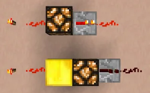
充能与激活 — 上方的红石灯既被“激活”（因此红石灯点亮），也被“充能”（因此毗邻中继器被激活），但下方红石灯只是被“激活”，并未被“充能”
对于属于实体方块的机械元件（包括命令方块、投掷器、发射器、音符盒与红石灯），既可以被充能也可以被激活。因此区分它们是被激活还是被充能相当重要：
- 如果机械元件能够激活毗邻的红石元器件和机械元件，那么它就被充能了。
- 如果机械元件本身作出了一定的反应，那么它就被激活了。
机械元件只要被充能就一定也会被激活，但被激活并不会一定会被充能（如被毗邻的充能方块激活）。
透明的机械元件（门、栅栏门、活塞、漏斗、铁轨、活板门）可被激活并作出反应，但因为不具备实体方块的性质而无法被充能。
刻
几乎所有的游戏（包括Minecraft）都是由一个大循环程序运行的。就像钟内的每个齿轮是和钟摆同步一样，推动游戏模拟进程的每个任务也是和循环程序同步的。相称地，循环程序的一个周期被称之为一“刻（tick）”。
游戏刻
Minecraft的循环程序是以每秒20周期的固定速度运行的。因此每刻发生在每0.05秒。在游戏中的一天将正好为24000刻，或20分钟。
但是这个速率也不是完全固定的。如果电脑的性能不足以跟上这个速度，单位时间内的游戏刻就会变少。由于游戏中的绝大多数动作都是以游戏刻而不是真实世界的时钟作为时间基准，这意味着在较慢的电脑上很多事情都要花更长的时间来完成。
每过去一刻，游戏的各方面都会更新：移动的物体位置会发生变化，生物会检查周围环境并更新自身的行为，玩家的生命值和饥饿值会根据玩家的处境发生变化，等等。
游戏刻不影响图像绘制。游戏的图像是在游戏内部更新后绘制的。因此，游戏的帧率不影响游戏刻的速率。这样能防止电脑的图形性能影响到游戏机制。
区块刻
在每一个游戏刻中，只有位于渲染距离内并且距离玩家128个方块内的区块会被纳入计算。
区块刻有许多作用：
- 雷暴天气下，闪电可能在区块内某处生成（1⁄100000的几率）。
- 每一纵向上的最顶端方块有1⁄16的几率检查天气更新：
- 在寒冷的生物群系中，如果条件合适，水会结成冰。
- 如果在下雪，并且条件合适，一片雪可能被放置。
- 如果在下雨，炼药锅可能被填满。
- 区块内某一个方块会接受到随机刻更新。
方块刻
每个区块被划分为16个区段，每个区段包含16×16×16=4096个方块。在每个游戏刻，纳入游戏刻计算的区块的每个区段会被随机选出3个方块给予一个“随机刻”。可以通过使用命令/gamerule randomTickSpeed <random tick per section>来改变给予随机刻的方块数。大部分方块不会有影响，除了如下这些：
- 小麦可能生长或拔除。
- 蘑菇可能传播或拔除。
- 藤蔓可能传播。
- 火可能熄灭或传播。
- 冰和雪可能融化。
- 树叶可能枯萎。
- 耕地的湿润程度会更新。
- 仙人掌、甘蔗、海带、竹子和紫颂花可能生长。
- 草方块和菌丝可能传播或变成泥土。
- 树苗可能长成树。
- 熔岩可能使附近的方块着火。
- 发光的红石矿会熄灭。
- 下界传送门方块可能生成一个僵尸猪人。
- 海龟蛋破裂或孵化。
- 营火冒出烟雾颗粒。
一些其他的方块可能会在将来的某些时候要求一个方块刻。在一段时间后必定发生并且行为可以预测的变化，往往使用这种“计划刻”——比如，红石中继器会计划一刻来改变它的状态，水会计划一刻来流动。同一个方块上，计划刻与随机刻可能会起到不同的影响。
这两种刻是分开运作的，计划刻调用的是与随机刻不同的代码。
因为随机刻是被随机赋予的，因此无法预测何时某个方块会在下一刻被给予。随机刻的间隔的中位数为47.35秒，即有50%概率不超过47.35秒，也有50%概率超过47.35秒，也有可能需要更短或更长的时间：例如，有1.5%的概率间隔时间小于1秒，也有1%的概率超过5分钟。随机刻的间隔的平均值在Java版为68.27秒，在基岩版为204.8秒。对上述数据的计算原理，参见维基百科几何分布。
红石刻
一个红石刻代表着两个游戏刻。这将在一个红石电路中的信号创造一个0.1（1⁄10）秒的延迟。也就是说信号从地点A到地点B是增加了0.1（1⁄10）秒的。一刻只能属于信号时间的增加，因此，一个信号的传送时间在刻的角度讲是永远不会是减少的。在红石的语境中，“刻”总是指红石刻。（但是也不全是）
电路体积
通常使用用长×宽×高的格式（电路的外切长方体）描述用于处理信号的电路的体积，其中包括底层用于附着的方块，不包括输入信号或输出信号的方块或结构。单位为方块（Block)，简称b。
红石分类
数字电路
数字电路，简称数电，即通过游戏所给的逻辑机制（或、非）来实现逻辑运算。
数字电路一般是基于二进制运算法则和逻辑运算来实现各种运算，从而实现各种复杂的计算机和计算器。
数字电路在现实中是一门学科，所以如果没有基础，数字电路这个领域是十分复杂而高深的。
由于数字电路里实现各种复杂的数学运算多使用到加法器，所以数电圈里有一句话:数电万物皆可加。
数电相较于模电，速度较快，体积较大。
红石模拟电路
红石模拟电路，即利用比较器的加减和游戏提供的运算机制（比较，减法）来对模拟信号的处理与运算。模拟电路是连续的信号而红石模拟电路是离散的信号，所以和真正的模拟电路还是有区别的，不能混为一谈。
红石模拟电路主要分为弱信号模拟电路和强信号模拟电路。
由于红石模拟电路里实现各种复杂的数学运算多使用到比较器，所以红模圈里有一句话:红模万物皆可减。
模电相较于数电，速度较慢，体积较小。
红石弱信号模拟电路
红石弱信号模拟电路，简称弱模。
弱模是基于0~15的红石模拟信号的处理与运算，运算规则一般基于16进制或10进制。
红石强信号模拟电路
红石强信号模拟电路，简称强模。
比较器可以最大可以寄存2,147,483,647信号强度，而红石线最大只能寄存0~15红石强度。既强模是对比较器中的15~2,147,483,647信号强度的模拟信号进行的运算与处理。
机械电路
机械电路，简称械电。
机械电路即利用活塞，粘性活塞等的种种特性，来实现方块的推拉。
常见有高速械电和高压械电。
高速械电
只追求速度，不追求体积的机械电路。要求最大程度地提高速度。
通常结构复杂，但速度极快（比如0.15s开门的2x2无痕玻璃门）。
高压械电
只追求体积，不追求速度的机械电路。要求最大程度地减小体积。
通常结构较为简单，十分精简，但有时时序复杂，速度极慢（比如占体积760方块的6x6活塞门，开关门共75分钟）。
粘液块科技
粘液块科技，简称绿萌
使用粘液块活塞组成的飞行器来实现各种复杂的战舰，轰炸机等。
生存实用电路
生存实用电路，简称生电。
主要特点是为生存服务，耗材少，稳定性强，多结合其他分支。
TNT大炮
TNT大炮其实是对于TNT实体的研究与模型建立，炮膛设计等。
基础篇
- TNT的性质
TNT 方块可以被下列途径激活：
- 使用打火石或火焰弹
- 提供了红石能量源
- 被带有火的箭击中
- 被由发射器发射出去的火焰弹击中
- 与火和熔岩接触
- 在爆炸半径内被其他爆炸触及，包括其他的TNT方块的爆炸和苦力怕或末影水晶的爆炸。
- 被命令方块生成，以此方法生成的TNT会立即爆炸[仅Java版]（可通过Fuse标签改变[仅Java版]）
- 被发射器发射
- 被发射器中的打火石点燃
一旦被激活后，TNT就会变成一个实体。它会在被激活的TNT方块的中心（+0.5，+0.5，+0.5）生成，它是一个边长为0.98的正方体。如果它被红石或火激活，它会在40次红石刻（4秒/80次游戏刻）后爆炸。如果它因爆炸而激活，它会在10至30红石刻（1至3秒）或5至20红石刻（0.5至2秒）[仅基岩版]后爆炸。
被激活的TNT材质会闪烁，它会在原始材质与白色材质之间不停切换。材质每秒会闪烁2下。
生成后，被激活的TNT会被得到0.2米/刻的垂直速度，0.02米/刻随机方向的水平速度。如果没有被任何方块阻挡，它将会在平地上移动0.166m。当倒计时器计时完毕时，TNT就会爆炸。如果被激活的TNT没有被方块支撑，那么它最多会在爆炸前往下掉77个方块。该方块的爆炸力为4。
被激活的TNT会被流过的熔岩点燃，它也可以被水流推动。
如果被玩家激活的TNT掉进了末地传送门，那么会在玩家进入末路之地时爆炸。当被激活的TNT穿过下界传送门时，它只会穿过传送门而不会被传送。
如果TNT在水中爆炸，它将不会摧毁任何方块，同样也不会伤害生物。
如果TNT在2格高或更高的任何类型的栅栏柱上被激活，那么这个被激活的TNT会穿过栅栏方块，并停在下一个栅栏柱上。当它引爆时，它只会对“卡住”它的栅栏方块造成伤害。
如果TNT在爆炸时有箭经过，那么这支箭就会被炸飞到朝相反于爆炸中心的方向飞行。
TNT在计时器每减少一秒时会掉落 19.75 个方块。
尽管被激活的TNT会被蜘蛛网卡住，但当TNT掉出蜘蛛网后，它会恢复到先前的速度并继续飞行、掉落。
基础篇
一、TNT炮的基本原理
原作者：PS01017
众所周知，TNT可以被红石元件激活，并在四秒后爆炸；在水中爆炸的TNT只产生推力，不破坏方块。
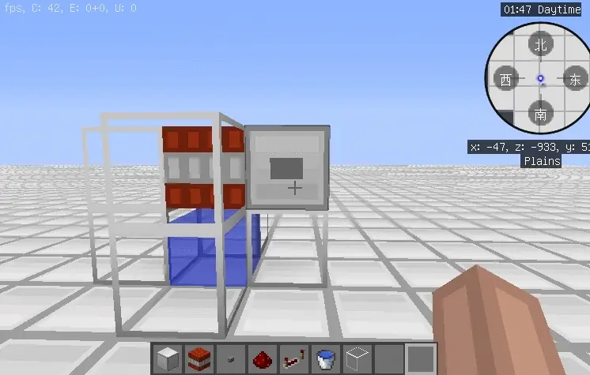
TNT可以被其它TNT的爆炸所推动，不难想到可以利用多个TNT同时爆炸产生的推力来将一个TNT推至远处。结合上面几条原理，我们便可以做出最原始的tnt炮（通常称为平民炮）。
首先我们需要搭建炮体。用方块搭建一个长U形，用下半砖封口，用于抬高炮弹TNT的发射角度；中间用水填充，为推进TNT提供环境。
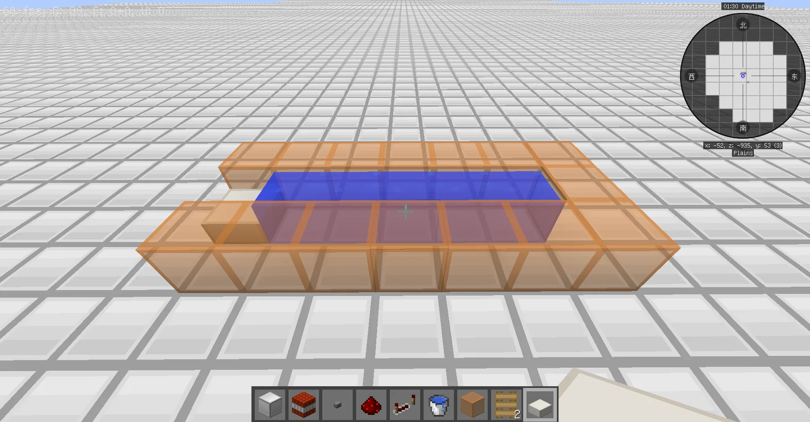
在其基础上往上叠高一层，用于填装TNT。
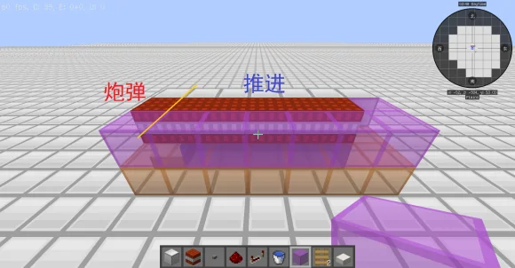
布线，推进TNT全部同时激活，炮弹滞后一小段时间激活。
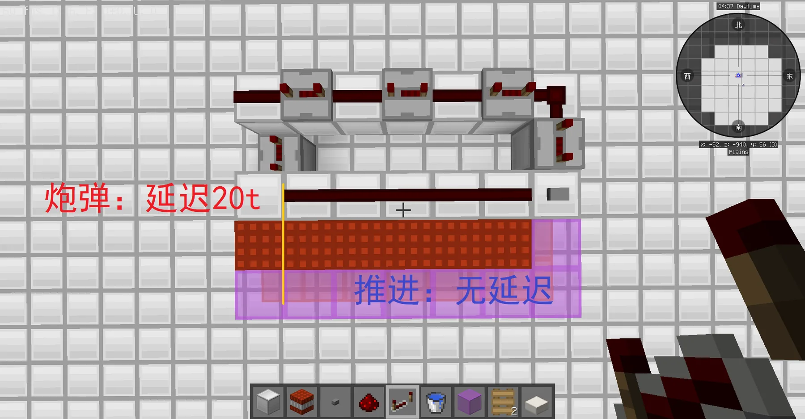
按下按钮即发射
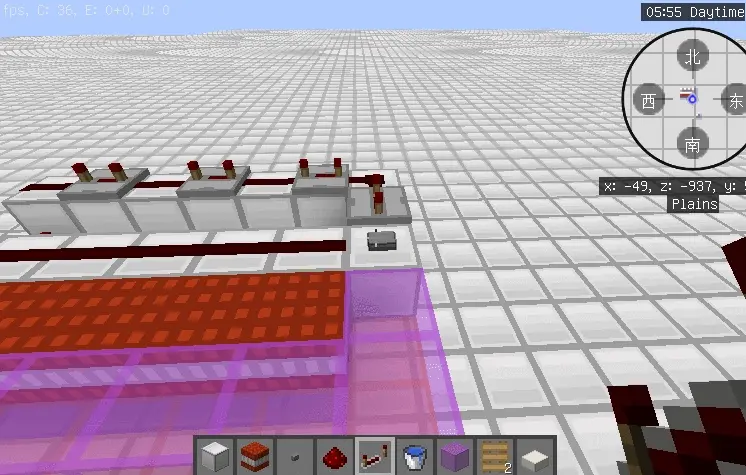
众所周知×2，激活装有TNT的发射器，也可以吐出一个点燃的TNT。
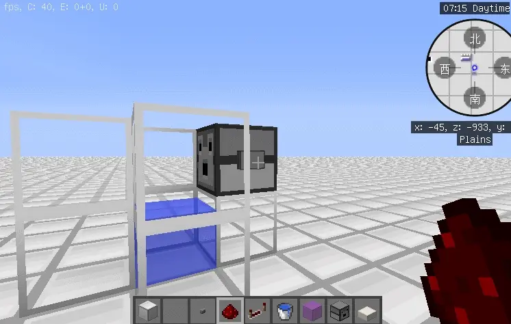
将上面的平民炮改为由发射器提供TNT：
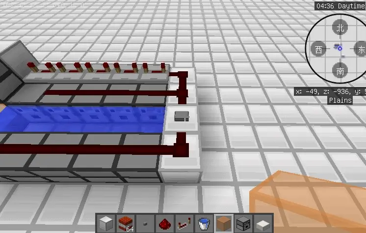
用发射器提供TNT具有空间利用率高、可连续多次发射、便于控制等优点，是绝大多数TNT炮的核心元件（某些复制TNT炮除外），后续TNT炮都将在其基础上建造。
- 弱归正——如何提升TNT炮的射程
原作者：PS01017
让我们继续研究平民炮。先大致画出炮弹TNT的受力情况。
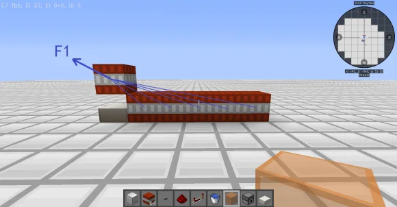
众所周知×3，TNT爆炸产生推力的作用范围是8格，且两个TNT间距越小，相互的推力就越大。
上图中可以看到，几个推进TNT与炮弹的距离从左到右依次增大，推力也依次减小。为了增大总推力、提升射程，我们需要想办法让推进TNT都尽可能地靠近炮弹TNT。
将炮管内的静止水改为从尾部向前流动的水：
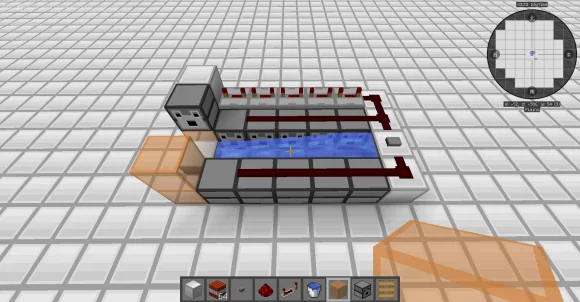
由于水流的作用，推进TNT聚集在炮管的前两格，显然可以带来更大的推力和更远的射程
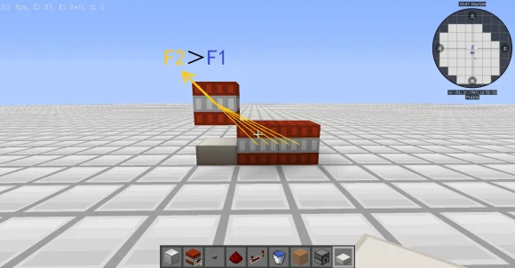
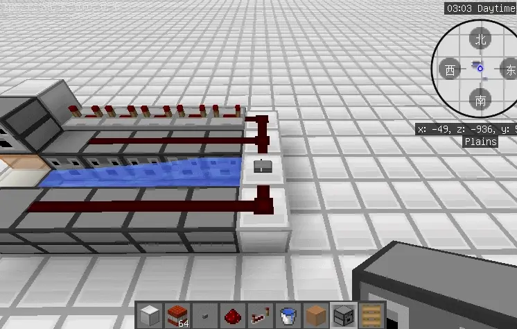
还是同一门平民炮。我们可以在平民炮的尾部加一个小推进舱，用少量TNT形成“一级推进”；原来的推进TNT则成为“二级推进”。
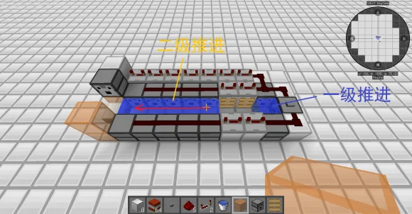
一级推进TNT早于二级推进激活，同于将二级推进TNT推至炮口处一格内，最大程度地提升推力。
（注意：一级推进的推力不能直接作用于炮弹TNT！）
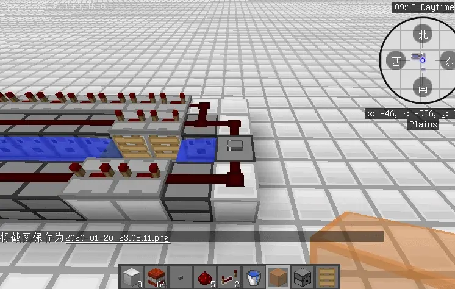
这种将推进TNT聚集在同一格内的过程，我称其为“弱归正”。弱归正可以通过水流、多级推进、活塞推动等多种方式实现，其中多级推进是最常用、最实用的方式，需要熟练使用。
三、推力分解（上）——如何防止炮弹TNT空爆
原作者：PS01017
先明确TNT炮的“射程”是什么：通常所说的射程，是指炮弹在地面TNT留下的弹坑到炮弹TNT初始位置的距离。
众所周知×4，相同条件下推进TNT的数量越多，TNT炮的射程就越远。有时我们会需要用大量的推进TNT（发射器）来实现远距离发射，如下图是一种常见的发射器堆叠方式：
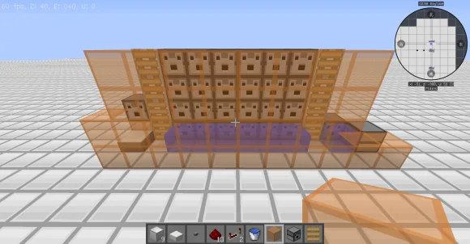
注意炮口依然用半砖作为“炮架”。如果你的TNT炮采取了这样的设计，可以尝试用不同数量的TNT进行推进，会发现射程并不与TNT数量成正比；如果推进TNT过多，甚至根本不会有“射程”——炮弹TNT在落地前就爆炸了（常称为空爆），这些都是我们不希望看到的结果（除非你有意为之）。
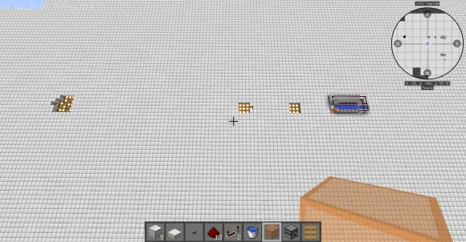
（半砖作为炮架，分别用3，6，9个TNT进行推进所留下的弹坑，显然并不均匀）
依然对炮弹TNT作受力分析。无论用了多少推进TNT，经过弱归正处理后它们对炮弹TNT的推力角度都是固定的，我们可以将推力F分解为Fx和Fy两个分力，如下图。
（重要，重要，这个地方很重要！！！）
依然对炮弹TNT作受力分析。无论用了多少推进TNT，经过弱归正处理后它们对炮弹TNT的推力角度都是固定的，我们可以将推力F分解为Fx和Fy两个分力，如下图
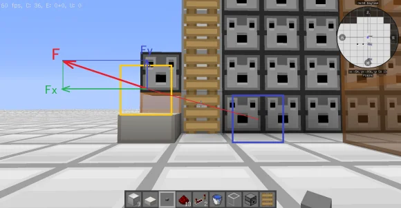
其中，水平方向分力Fx与炮弹TNT水平初速度成正比，在追求射程时我们希望它越大越好；铅直方向分力Fy决定炮弹TNT在空中的飞行时间，适当增大Fy对提升射程很有帮助，但Fy过大会导致炮弹TNT空爆。由于发射角度固定，推力F（或推进TNT的数量）必定存在一个最大值，超过此最大值时炮弹TNT便会空爆。
我们可以用一些简单的手段来防止空爆，如尽可能加大炮弹TNT与推进TNT的延迟（至多4秒），或将半砖换为活版门等方块来减小发射角。但采取这些手段只能使“最大值”有限增大，我们依然无法摆脱空爆的束缚。为了彻底解决这一问题，我们不得不抛弃炮架结构，改用“推力分解”的推进方法。
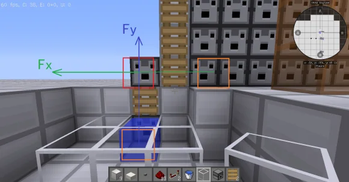
如上图，去掉原来炮口的半砖，原推进TNT为炮弹TNT提供水平推力Fx；在炮弹TNT下方增加一个小发射仓，为炮弹TNT提供铅直推力Fy。发射时，Fx与Fy同时作用于炮弹TNT。
采用这种结构的好处是，我们可以分别独立控制Fx和Fy的大小。在Fy确定且适当的情况下，无论我们怎样增大Fx，炮弹TNT都不会空爆，且射程与Fy（或推进TNT数量）近似成正比。
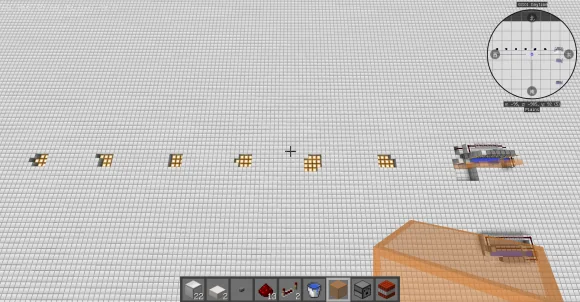
推力分解同样是最常用的推进方式，在许多TNT炮的设计中发挥着非常重要的作用。
（为了方便表述，教程中多次提及“推力”。事实上Minecraft中不存在“力”的概念）
- TNT初始运动 & 连射炮
原作者：PS01017
（Warning：此部分内容不完全适用于基岩版）
TNT实体生成同时会获得较小的初始速度，这个速度在y轴方向的分量必定为正值，x、z轴则随机。体现为点燃TNT时会朝随机方向“跳”一下，如下图。
（在基岩版，TNT初始运动在似乎是向西方给予随机位移）
TNT的初始运动可能会影响TNT炮的精确性。依然以平民炮为例，下图中炮弹TNT未作处理，导致发射时角度出现偏移。
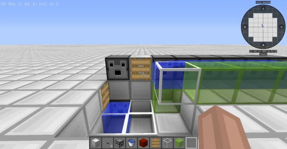
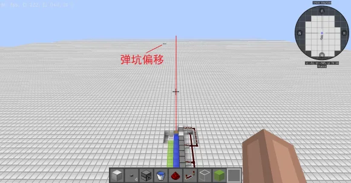
初步的解决方法很简单，在炮弹TNT的生成位置四周用方块围起来，将其水平位移限制在本格内。注意为了不影响发射，一般让供弹发射器悬在较高处。
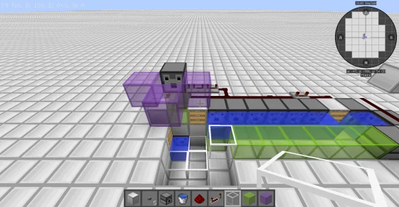
设计TNT炮时应处处注意TNT的位置限制，除非你故意想让弹道产生随机误差。
加以限制后，TNT仍有细微偏移，但影响已经很小了，对于该细微偏移的处理将在以后介绍。
连射炮，顾名思义，可以周期性地连续发射TNT，其性能指标除了射程，还有射速、稳定性等。
我们首先讨论射速。射速指的是连射炮的发射频率，你可以用Hz作为单位，也可以用发射周期来表示，但TNT炮玩家通常会习惯用发射次数/分钟来表示射速。如射速5Hz的连射炮，通常也说成每分钟300次（或300速、300频、300/min等等）。
（注意：射速并不等价于炮弹TNT飞出的频率，通常可以以推进频率为准。打个比方，一门推进为300/min的连射炮，即使每次发射4个TNT，射速也依然是300/min，而非1200/min）
简单介绍连射炮的思路。我们需要用时钟电路来周期性地激活推进和炮弹，下面是最常用的一种时钟电路：比较器时钟（我乱起的名字）。其输出周期可表示为(环内延时+1tick)*2，如下图环内延时2t，周期则为6t，原理请自行探索。
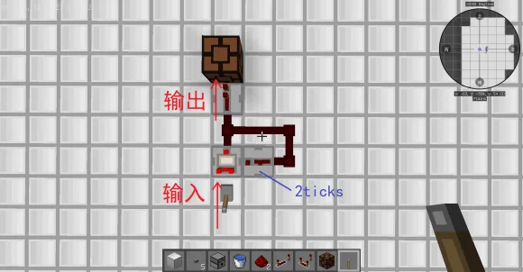
像下面的连接方式可以达到比较器时钟的最高频率：5Hz（300/min），这也是发射器能接受的最高频率。注意比较器输出端以外至少三格才有时钟效果。
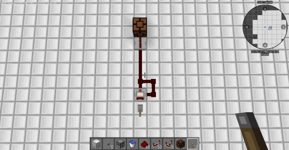
我们来做一门简单的60/min的连射炮练练手。依然魔改平民炮，结构与原来保持一致，然后将每部分的输入都改为周期为10t的比较器时钟即可。
（如果你对TNT炮还不熟悉，请一定保持各部分的输入频率相同！）
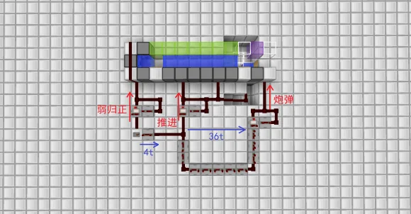
上图中推进和炮弹间延时为36t。该延时（连射炮所有部分的时序同样如此）的选择应仔细考虑各种因素，理论上不超过40t且不太短的延时都是可以接受的。如果你不希望第一次发射时射出太多堆积的炮弹TNT，可以让延时尽量接近40t（如上图）；如果你的炮弹TNT生成后需要一定时间才能到达炮口（如从空中供弹），则选择的延时应较短。
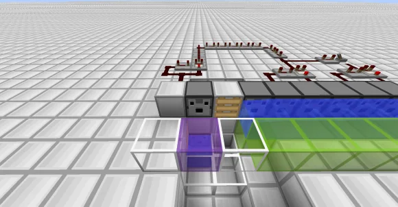
炮口侧面用方块封住以保持直射。我们暂时不需要完全精确的连射，因此没有限制炮弹TNT向前方的初始运动。结果射程可能会有小幅度波动。
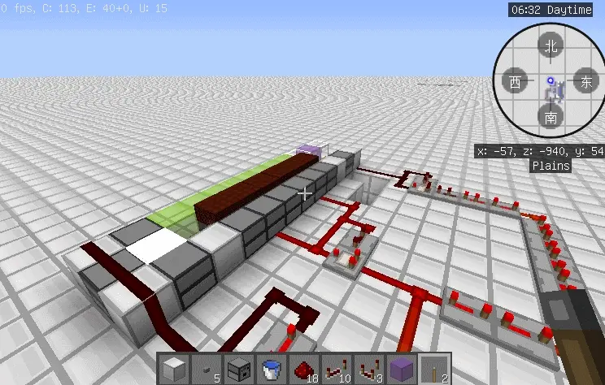
我们把射速提高到150/min，即把各部分的时钟周期都调到4t，看看会发生什么：
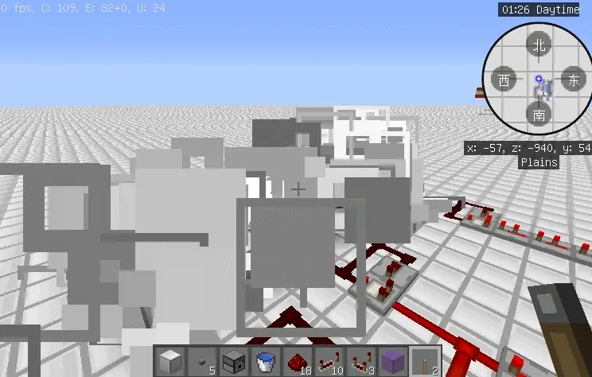
推进TNT向外乱窜，导致炸膛。这是由推进TNT的初始运动造成的，下面几张图将进行分析。（PS大佬画得真棒）
为简化分析，我们先假定每次推进只用一个TNT。激活前40t，TNT持续生成并在炮膛内堆积。
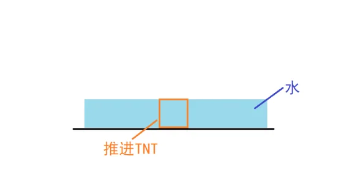
从第40t开始，炮膛内的TNT开始持续爆炸产生推力。由于TNT初始运动，新生成的推进TNT会向上“跳”一下，与正在爆炸的TNT形成一个高度差（下图中这个高度差被夸大了），从而受到向上的推力，导致TNT飞出炮膛而炸膛。
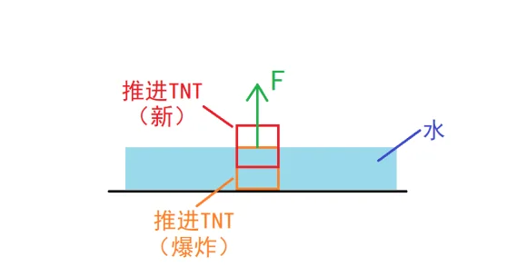
解决方法：在推进部分顶部用方块封住，以限制TNT向上运动。
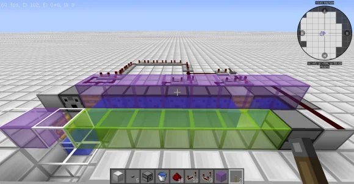
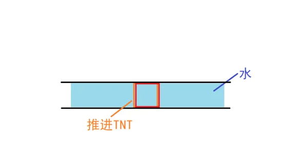
封顶后推进TNT的运动被限制在炮膛内，可持续产生推力。不同时间激活的推进TNT之间会相互影响，尽管我们进行了弱归正，但射程仍不稳定。推力稳定问题不属于基础教程的范畴，我们以后再讲
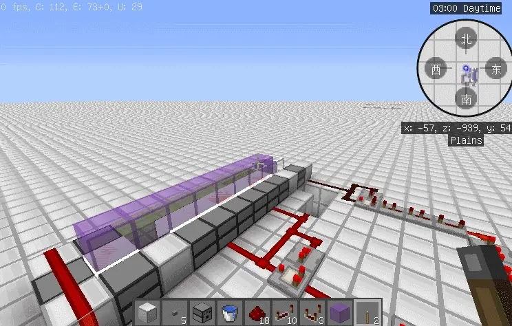
总结连射TNT炮的要点：
1、除了供弹部分，炮体的其它部分一定要是完！全！密！封！的！（这个很重要，除非你要用某种骚操作）即推进TNT不会有任何机会飞出炮膛；
2、如果你对TNT炮不完全熟悉，请一定要给炮膛内每一个方块都灌上水！这是防止炸膛的最简单的办法。（但我其实并不很推荐这个，入门之后就不要使用了，用反而容易出问题）
- 发射器BUD（Block Update Detector方块更新感应器）
原作者：恩氟烷瑞
（仅存在于java版！！！！）
（仅存在于java版！！！！）
（仅存在于java版！！！！）
和活塞类似，发射器是有BUD（Block Update Detector，方块更新感应器）的，这意味着它能够像活塞一样接收它上方方块的信号，从而被激活。如果让发射器处于亚稳态，那么此时如果给它一个更新，它就会被激活。
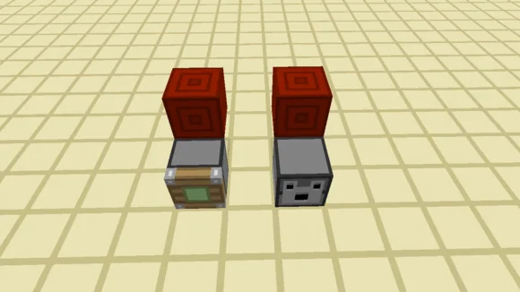
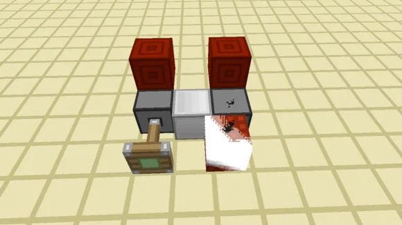
提到发射器的BUD有什么用？这里问大家一个问题，同样是激活3×3的九个发射器，请问是左边的方式好还是右边的方式好？
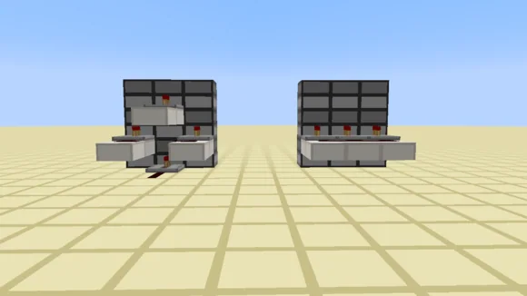
答案是左边的方式好。为什么？这里补充两个知识
知识点一：
当一种红石元件处于BUD状态的时候，如果不对它进行更新，那么它所处的状态便不会更改
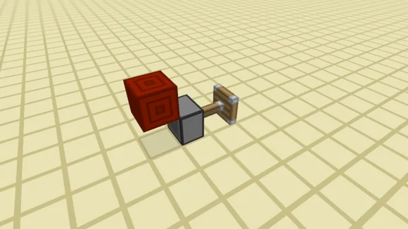
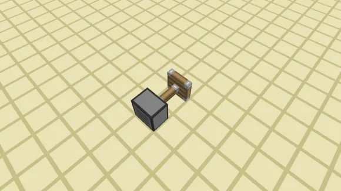
对于一个发射器而言就是，如果它通过BUD被激活，此时如果不给它一个更新的话，那么它便会处于激活锁定状态，此时再给它一个红石信号是不会让它有所反应的。在红石炮中的表现就是，发射器不会发射tnt。
比如这种情况
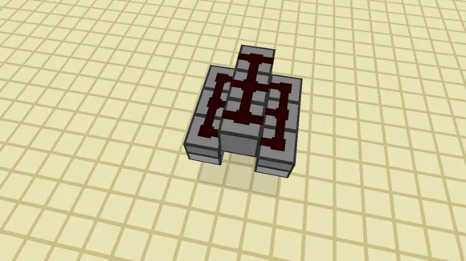
大家可以自行尝试一下，这种情况会导致自第二次激活开始，有些发射器便可能不再发射tnt
知识点二：
红石中继器在放置、激活、失去激活时会有一个比较奇特的更新范围，它只会更新其前方方块和该方块的毗邻方块（图中所示染色玻璃的区域）
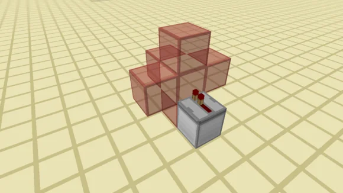
我们让这些活塞处于亚稳态
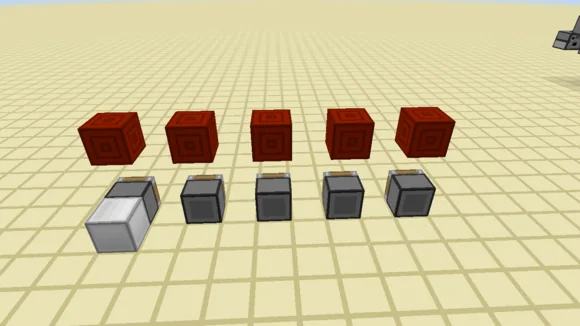
放置中继器便会出现这种情况
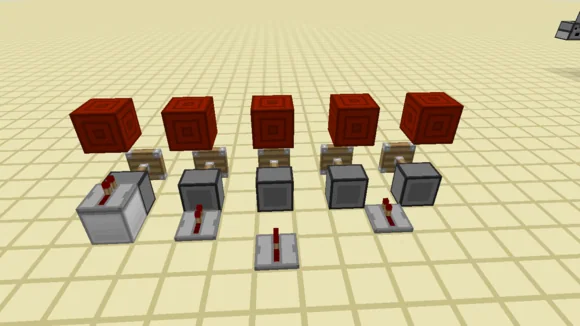
虽说活塞和发射器都有BUD但是不同之处在于，活塞激活时可以更新周围的区域（或者叫其毗邻方块，即下图红色染色玻璃标出的区域），但是发射器不行，发射器在被激活时是无法更新其毗邻方块的
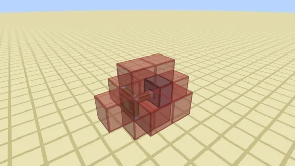
我们可以通过以下实验进行验证
首先我们要清楚，红石线在放置，破坏，亮起，熄灭的时候会更新其毗邻区域以及其毗邻的毗邻（下图红色染色玻璃标出的区域，包括红石线本身和那个铁块）
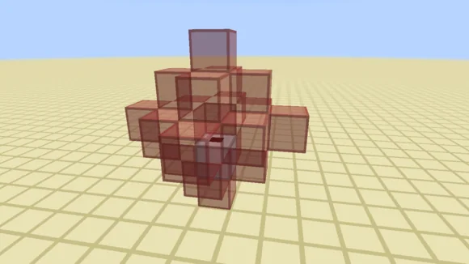
我们可以做出以下的实验装置进行验证
图中染色玻璃标识出的为红石线的更新范围，通过对比我们可以发现，右侧装置中只有上方的活塞处于红石线的更新范围（左图黄色染色玻璃标出的位置）下方两个活塞都不在红石线的更新范围之内，其中一个已经处于亚稳态，而另一个如果在上方红石线更新的条件下，也将处于亚稳态
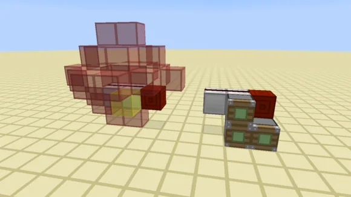
点亮红石线，我们发现三个活塞都伸出了
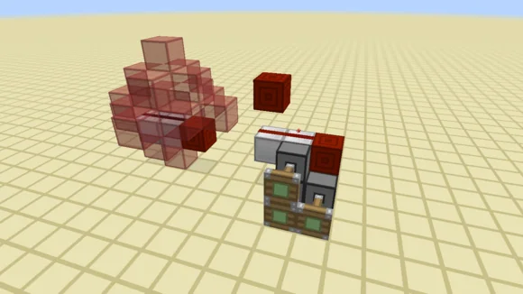
其原因在于，左上角的活塞会更新左下角的活塞，而左下角的活塞又会更新右下角的活塞，从而三个活塞同时伸出
我们把活塞换成发射器来看看，发射器中都装有箭
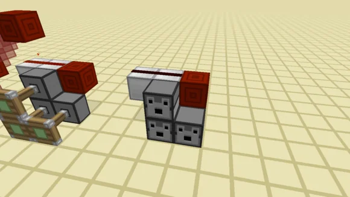
点亮红石线，只有左上角的发射器射出了箭
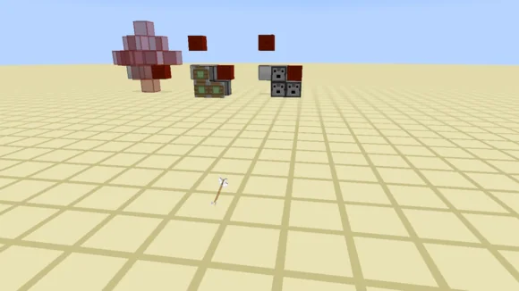
那么我们回到上次留的那个问题
为什么交错的中继器激活会比并排的中继器激活方式要好
首先我们来看并排式的，这是一个前后的示意图
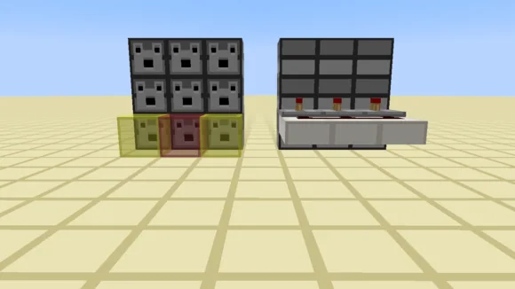
图中红色玻璃标出的发射器（以下简称红发射器）处于有三个能触发BUD的位置，黄色玻璃标出的发射器（以下简称黄发射器）有两个能触发BUD的位置。
既然发射器本身的激活是无法更新其毗邻方块的，那么那些连射的大炮是怎么实现稳定射程的呢（或者说，什么让第一次发射后因为BUD而处于激活锁定状态的发射器被更新而回归原始态呢）？
答案就是中继器。之前也向大家展示过中继器的更新范围了。
中继器可以更新这个发射器板中的一个十字形区域。
我们先来分析一下比较简单的黄发射器
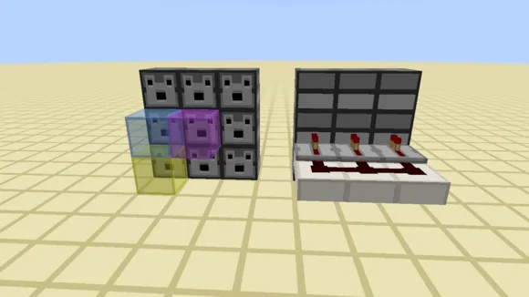
从目前的种种现象来看，各种红石器件的更新是按顺序的，同种红石器件的更新也是逐序的，因为我本人也不是太清楚具体的更新顺序，所以我只能穷举一下各种情况了（据说红石线的更新是随机的……简直有毒）
情况1：更新顺序先紫后蓝（那个紫色其实是品红但是为了方便表述作者就直接用紫色了）
在紫发射器被强充能后，黄发射器会处于亚稳态，但由于中继器更新不到它，所以它不会被激活。随后蓝发射器被强充能，黄发射器被更新，也被强充能方块激活（具体顺序未知）。在发射器失去激活时，紫发射器首先失去充能，随后蓝发射器失去充能并给黄发射器一个更新，黄发射器回归原始态，所以这种情况不会出问题。
情况2：更新顺序先蓝后紫

在蓝发射器被强充能后，黄发射器被激活，随后紫发射器被强充能，黄发射器处于一个亚稳态。在蓝发射器后的中继器失去激活时，会给黄发射器一个更新，而此时黄发射器正好是处于亚稳态的，这个更新让黄发射器进入了激活锁定状态，随后紫发射器后的中继器失去激活，但是更新不到黄发射器。第二次激活时，蓝发射器被强充能，同一gametick内，发射器被中继器更新，不过此时发射器依旧算激活锁定状态。这一gametick过后，黄发射器算作被强充能的蓝发射器激活而处于激活锁定状态，此时给它一个红石信号也无法让它被激活。之后失去激活的情况就和第一次一样了。
根据上面的分析，情况二也就是先激活蓝发射器再激活紫发射器的情况下，黄发射器就会出现第二次及其以后的激活不发射物品的情况（如果不给它一个额外的更新的话）
那么红色发射器呢？它的更新情况更加的复杂，不过，其实这些情况只是黄发射器情况的延伸
考虑到对称性，其实红发射器之有三种情况，即蓝蓝紫，蓝紫蓝和紫蓝蓝。大家可以根据前面的分析自己推导一下，只要紫发射器不是最后一个更新，那么红发射器就会一直处于激活锁定状态。
然后我们再来看看这种交叉布线的情况
对于那些只有一个可以触发BUD位置的发射器（比如图中的黄发射器），我们不用考虑，因为在中继器失去激活后带来的更新会让其回归原始态。在这组发射器中，我们只需要考虑红发射器，因为它有三个触发BUD的位置。
红发射器所处的情况其实比较复杂，不过我们可以分两种情况来看，一种情况是红发射器最后更新，一种是红发射器不是最后更新。
情况1：红发射器最后更新
由于红发射器最后更新，所以不管之前它处于什么状态，在所有中继器失去激活后它都将处于原始态。
情况2：红发射器不是最后激活
由于红发射器不是最后激活，所以根据之前的分析，红发射器应该要处于激活锁定状态，但是事实并非如此，红发射器每次都能够正常激活，这是为什么呢？
其实，这个是由红石线的更新导致的。不管红发射器是否处于激活锁定状态，在第二次激活时，由于红发射器后中继器所连的红石线能够给红发射器一个更新（红石线的更新范围之前有提），所以红发射器会回归原始态，这个更新只需要花费1gametick的时间，而中继器激活发射器需要2gametick，所以发射器会再次被激活。那么，有没有可能把中继器改为红石线来让红发射器一直处于激活锁定状态呢？不行。因为在我这种情况下，把中继器改为红石线会改变红石线的指向，有些红石线是不会指向发射器的，自然无法激活它。
不过，从另一个角度考虑，如果不让红石线更新红发射器的话，红发射器依旧有可能一直处于激活锁定状态？
是的，我们可以把装置的布线改成这样
由于红石线更新的随机性，我在每个不同的位置都放红石两次，结果还真的让我找到了一个可以让红发射器一直处于激活锁定状态的位置
我的版本是1.7.10，此时面朝的方向为西，由于红石线更新规律随机，而且每次更新顺序固定（这是好像跟java的版本有关，而且每个版本的顺序可能还不同，所以这个实验的复现性比较差），所以当红发射器后的中继器不是最后一个更新时，红发射器便会一直处于激活锁定状态。
那么，如何避免出现激活锁定状态的情况呢？
发射器墙可以用交错布线，而下图的这种情况，我们有另外一种方式。
有时为了提高空间利用率，我们会采用这样的炮管
而如果直接在发射器上铺红石线的话，又可能出现激活锁定的情况
所以，为了避免出现激活锁定的情况，这样放置发射器时我们不能直接在发射器上铺红石线，不过我们可以这样弄
利用半砖上铺红石线来激活发射器，这里利用了BUD和红石线的更新范围。根据前面的推导，如果看明白的话这里应该可以直接推了，图中的发射器要么没有触发BUD的位置要么只有一个触发BUD的位置，不会出现激活锁定的情况。
所以说我们也不能用下图的方式激活发射器，由于红石线能够对实体方块弱充能（而不会充能半砖），所以会出现有多个触发BUD的位置的发射器。
在有些对射速和稳定性要求比较高的红石炮中，我们会用到这样的压缩装置
这个装置可以提供五个tnt用来压缩炮管中的tnt(具体怎么用之后会讲）
我们可以这样布线
有时候因为方向的限制，我们可能会这样布
但是这样其实是不行的。至于为什么，大家可以自行分析一下（只能说有可能不行，因为那个蛋疼的随机更新顺序。所以，为了保证不被随机所影响，布线时要尽量避免BUD影响的情况出现）（如果按下图方式激活，图中最远端的那个发射器会处于激活锁定状态
进阶篇
注意：
从此处开始，教程不在是程序化，单一化的了，而是大多为特性，理论，模块或某一炮种的教学。
一．1200稳态高频炮及STS
原作者：Q43
（注：1200高频仅存在于java版中，移动端最高频率为600频，即为错开1gt的比较器高频）
1200高频的红石炮似乎并不少见，早在2013年9月，D大就做出了1200的高频红石炮，(原理是利用直连拉杆的活塞的启动延时1.5t隔开4个300高频，达到1200高频)可是这个高频跟稳态高频却不一样
什么是稳态高频？
稳态高频：指对于长距离高频射击时，弹头TNT落点基本相同的高频推进（即推进器有稳定的推进周期）
之所以稳态高频比普通高频的难度高，原因就是1.要求远距 2.要求稳定
但是有红石炮基础的人都知道，想要射得远就需要堆叠发射器（TNT矿车除外），一堆叠发射器就需要利用多阶推进使推进TNT到达制定的位置，这时候一旦接上高频，不仅多阶推进因为TNT在膛中乱窜使推进不稳定，更因为多阶推进的本身不稳定使其推进的TNT也在膛中乱窜，就像正反馈一样，不稳定性随着推进阶数的上升而上升，但最后做出来不稳定不远距，甚至还会炸膛
所以说我们需要稳态时序理论来帮助我们构建一个推进的稳定周期
稳态时序理论：
简称STS，看起来十分高大上，其实要点只有三个
1. 信号的脉冲化
2. TNT运动的不连续性
3. 高频周期的合理分配
首先是信号的脉冲化，众所周知脉冲信号是一种离散信号，但对于红石炮的稳态高频来说，我们需要把非离散信号也看作是脉冲的形式，比如说稳定的1信号，是一个周期无限长的“半脉冲”，在之后会给出原因
其次是TNT运动的不连续性，因为MC是以Gametick(0.05s)为基础时间单位，所以说TNT的运动是不连续的，也就是说1Gt的时候TNT在一个位置，下一Gt更新时便“瞬移”到下一个位置，中间的路程不经过！但是对于电脑处理来说，如果这两个位置之间有障碍物，它会消除下一Gt算出的位置坐标，改为瞬移到障碍物处，但实际上中间路程不经过！
最后是高频周期的合理分配，对于红石炮利用的高频(比较器时钟或标准的漏斗时钟)他们都有一个特点就是具有时长对称性，也就是说基准值0和较高值1都持续相同时间，构成一个周期，这样我们的高频周期便更好分配
那么如何合理分配周期
比如说对于下面传统的266推进
多阶之间互相影响：我们会发现TNT会在膛内乱窜，因为2推6A的时候，6A爆炸，把2中的TNT推到后面，导致周期开始混乱，此时可以改成166推进，不过其实166推不到位
同阶之间互相影响：但是因为6A中也会因为早期放出的TNT影响本仓内的TNT，也不够稳定
那么我们就着力解决这种情况
A首先是多阶之间互相影响如何让多阶之间不互相影响，第一种方法是分叉式炮体，这样多阶推进不会互相影响，第二种方法是透门原理(在移动端1.1以下版本和电脑端除WIN10版外的版本，打开的栅栏门没有体积，可以通过TNT，但是不能通过爆炸推力)，如下图
B其次是同阶之间互相影响，我研究了很久同阶之间的互相影响，无论是从时序上还是结构上，可惜都过于复杂，难以布线，所以这里给出一个最简便最暴力的方法，对于同阶的炮体，就是考虑推进不稳定最差的情况，这种情况都可以将TNT推进到位的话，那么就可以在所有情况下推进到位，这种方法非常暴力，不过有时很有效，当然如果你对这种解决方案不满意的话，也有时序的解决方法
时序的解决方案：
对于标准的266推进，我们可以改为
此时，在时间轴上0 Gt激活C端，2 Gt后激活A端(因为B端TNT被推进后需要2Gt时间才能到达A推进处)，最后80 Gt激活B端，这样可以形成稳定的推进周期，互不影响
可是在实际搭建时，由于电路布线和结构伸展等问题，虽然上图可以达到稳定周期，不过推进距离过小，使炮体伸展不开，这时候需要改造
如下图
采用了多阶推进来增强推力，不过为了稳定推进，我们需要修改时序
可以看到被推进的TNT依旧是300高频，不过多阶推进端改为150高频，为什么可以这样？
白色是300高频，蓝色是150高频，如果是300对300，那么每次推进1枚TNT，若是300对150，那么每次推进2枚TNT，也是稳定周期
不过这个有一个限制，就是频数比必须是整数比才能构成稳定周期，比如说50：210的高频比，就属于不稳定的
最后就要提一下关于脉冲规整和信号脉冲化的问题
什么是脉冲规整？
比如说下图
我拉下拉杆后它会产生一个周期为2tick的对称性脉冲，不过只持续一个周期，若我，在前面加上一个2t的中继器，就会被规整为周期为4tick的对称性脉冲，也持续一个周期
如果是下图
即使有比4tick小的中继器，但脉冲依旧被规整为8tick周期的单脉冲
当然这也引出了信号脉冲化的源头，比如说我拉下下图的一个拉杆
拉杆开启和关闭的间隔时间如果大于9tick的话，此时中继器的激活和关闭就像是一个18tick单脉冲，但是因为脉冲信号的规整化，如果我开启关闭的时间大于4tick小于9tick，中继器的激活和关闭会成为一个周期8tick到18tick之间的单脉冲，如果我开启关闭的时间小于4tick，那么会被中继器的4tick规整为周期为8tick的单脉冲
所以说为什么要信号脉冲化？
从上面的例子中就可以看到一丝端倪，拉杆提供的信号在某种意义上也是一种脉冲，正是因为这个脉冲规整了中继器的4tick脉冲，才使得上面的情况可以发生
而且你如果按我的方法做稳态高频的话，你会发现明明运行的时候很好，一关上激活端有时就会炸膛？原因就是拉杆或是其他激活方式都有一个半脉冲，比如说，你拉下了拉杆，再关上，就会发出一个半周期长度是激活时间的半脉冲，如果你这个半脉冲与炮体的高频周期不符，那么就会破坏稳定周期，导致关闭时不稳定，甚至炸膛
所以说在做稳态高频时，注意时序和归正效果，就可以完美的做出一个稳态高频红石炮。
当然，还有一个稍微暴力一点的方法，不过不是总适用，需要跟时序相互配合，既然我无法精准控制拉杆的半脉冲长度，那我就限制拉杆的脉冲，做一个限制阀
如图的黄色布线，作为限制阀同样也是关闭阀，根据时序，依次强制关闭供弹端和推进端，保证推近周期的稳定性
https:/ /pan.baidu.com/s/1f6074ICrcLcv_85J4Rft8Q 密码：qaba
此为1200稳态高频炮存档
二．矢量理论及三维扩展
原作者：Q43
矢量理论是什么？
矢量理论指在二维平面中，当推进TNT和发射TNT相距固定距离，且推进TNT和发射TNT的激活时间间隔固定，增加推进TNT数，发射TNT被推进的距离等量增加
可以说矢量理论是矢量炮最根本的基础，经过了大量的实验证实，矢量理论都完美的符合实际情况
矢量理论的证实：
通过源码我们可以知道，在MC中TNT实体的X轴和Z轴方向运动的递推公式是
Xn 代表n Gametick 时的水平位移
Vn 代表n Gametick 时的水平移动速度
K 是空阻常数，TNT实体是 0.9800000190734863
通过推导可以得到TNT实体的X轴和Z轴方向运动的关于时间n（单位Gametick）
的运动函数
Vo 是初始速度，在矢量理论中，由于是通过推进TNT爆炸产生的推力得到的速度，所以我们可以用爆炸公式来计算初始速度
N 是推进TNT的数量
D 是推进TNT与发射TNT的距离（是TNT实体中心的距离）
R 是TNT实体的爆炸参数，也是爆炸影响的半径，值为8
所以在时间n一定时，增加推进TNT数，我们有关于水平方向推进距离的差值公式 Dx
可以看到这是个定值，这就是矢量理论的依据，也证明了矢量理论的正确性
强矢量理论：
所谓强矢量理论，就是把矢量理论从二维平面扩展到三维，但是由于竖直方向有“重力”的作用，所以跟水平推进有很大的区别
同样通过源码我们可以知道，在MC中TNT实体的Y轴方向运动的递推公式是
（原作者公式错误，此处已给予修正）
Yn 代表n Gametick 时的竖直位移
Vn 代表n Gametick 时的竖直移动速度
K 是空阻常数，TNT实体是0.9800000190734863
G 是用来模拟重力作用的常数，TNT实体是 0.03999999910593033
通过推导可以得到TNT实体的Y轴方向运动的关于时间n（单位Gametick）的运动函数
同样的，Vo依然是初始速度，只不过是竖直方向的初始速度，但是计算方法跟水平方向相同
所以在时间n一定时，增加推进TNT数，我们有关于竖直方向推进距离的差值公式 Dy
（很巧妙不是么，可以看到这个定值跟水平方向完全一致，这就是强矢量理论的依据，也是能够做出完全等距弹坑的三维矢量炮的依据）
所以强矢量理论以后就真正的可以说是一个“理论”了
强矢量理论：即在三维空间中，当推进TNT和发射TNT相距固定距离，且推进TNT和发射TNT的激活时间间隔固定，增加推进TNT数，发射TNT被推进的距离等量增加
那么如何制作一门矢量炮？
（各位感兴趣的来了（笑）
原作者：PS01017
矢量炮，是一类能打出规律点阵的TNT炮的总称。虽然没有明确的定义，但通常认为一门矢量炮须要具备以下要素：
1、拥N（N≥1）条发射轴，即可从N个方向对炮弹TNT施加推力；
2、对于每一轴，具有多个连续射程档位，且射程与档位成正比；
3、每一轴的射程与其它轴的档位无关。
通常发射轴直接从x、y、z三轴中选取。比如，仅沿x轴发射的矢量炮为一维矢量炮，可沿x、y、z三轴发射的矢量炮为三维矢量炮。
我们知道，经过推力分解、推进TNT归正处理后的TNT炮，射程与推进TNT数量大致成正比，我们以之为基础做一门简单的一维矢量炮。
在半空中做一门平民炮。由于炮弹TNT发射时具有一定高度，我们不需要提供y方向的推力，水平发射即可。
“可控”是矢量炮的最大特点，因此每门矢量炮都要有一套用于控制射程的系统，这套系统称为“火控”。
我们可以利用粘性活塞推拉方块，给每个发射器做一个控制单元。如下图所示，当拉杆激活时，活塞推出，开炮时下方输入端可以激活一个发射器；拉杆关闭时，发射器则不能被激活。
布线依然和平民炮一样，但每个推进发射器都配备了一个控制单元，这就形成了一套简单的火控系统，我们可以通过改变拉杆激活的数量来改变推进TNT的数量，打出不同的射程。
这门炮可打击直线上的6个点位，因此它是一门6点位的一维矢量炮。
许多时候我们会希望TNT炮的射程不止限于一条直线，而是能覆盖一个平面。对上面的一维矢量炮加以修改，即可做成一门二维矢量炮，满足我们的需求。
一门二维矢量炮需要至少两组推进。我们复制一门一样的平民炮，与第一门垂直放置，这样位于交叉点处的炮弹tnt就可以同时接收两个方向的推力。
布线完全一致。注意按下按钮时，两边同时被激活。
这是一门7*7点位的二维矢量炮。
通过改变两个方向的档位组合（每个方向0到6，共7档），我们可以打出一个7*7的点阵。但由于这门炮不能在无推力的情况下发射，打击范围不包括原点（0,0），因此最多可打击7*7-1=48个点。
那么，如何控制点位，也即是我们常说的，制作火控呢？
有两种常用方法：累加原理与模红。
前者可以转化成一个数学问题:给定几个数x1、x2、x3、x4......xn， 使得可以用这几个数通过相加，组成0^ m的数，这几个数组成的数列便是累加数列。而在游戏中最常用的累加数列莫过于二进制中的位权数列一一1、2、4、8、16.......2^ (k-1)其中，k为对应二进制数的位数。比如，二进制数0110可以通过位权转化为十进制数6。在游戏应用中，红石线有信号，视作1;无信号，视作0。我们可以给定几条红石线，每条红石线控制对应位权数目的发射器，通过激活对应线路，来控制不同数目的发射器。
模红在游戏中依据其信号强度分两类:弱模与强模(还有一种特殊的、只能靠命令方块输入，仅能在一个比较器中传输的“渣模”)。弱模指可以在红石线中传输的0^ 15格强度的模红信号(同时，15格强度也是红石线的强度极限)强模指强度超过15格(同样存在信号极限，但是对于红石炮来讲这个极限跟无限没什么差别)仅能在比较器中传输的模红信号。(在java版中， 一旦强模信号接入红石线，立刻衰减回15格信号)
显然，我们输出6格的模红信号(直接接入炮体中)那么就可以激活6个发射器;输出3格，便激活3个发射器......也正因如此，弱模信号常用于高速激活发射器以提高扫射矢量炮射速。而强模因为无法在红石线中传输，通常用于处理数据、统一火控间IO接口等。
实现模红扫射有很多种方式，最常见的是通过累减，然后覆写RAM内数据，再给予一次脉冲信号读取到炮体上的方式;也可以通过模红计算器，将多次输入的数据进行运算，得到最终输出;如果嫌麻烦，也可以通过高密度矩阵，让人在一定范围内走动，产生不同的信号，从而实现走到哪打到哪......
根据矢量理论，在水平二维矢量炮的下/上方再加一组y轴推进，即可做成三维矢量炮。实际上三维矢量炮的设计要考虑许多因素，再加上一些TNT特性的干扰，实现起来相当困难
三．强归正
原作者：PS01017
前面基础篇所述的“推力与推进TNT数量成正比”，有一个重要的前提：所有的推进TNT都应该是完全重叠、位置固定的。
通过弱归正操作，我们可以将推进TNT聚集在同一格内。但这些TNT真的完全重叠了吗？事实上并非如此。
当我们点燃一个TNT，我们观察到的TNT实体似乎是一个边长为1的正方体。
实际上，通过翻源码或查阅wiki，我们会发现tnt的边长其实是0.98。
我们可以将上面动图中的情况（即向一格的空间内点燃一格TNT）的俯视图抽象化为下图。（对TNT的尺寸进行了夸张处理）
TNT实体的边长小于1，意味着同一格内的不同TNT，它们的位置可能是不相同的。由于TNT点燃时具有随机的水平初速度，它会挤到四个角落中的随机一个。
同样道理，一根炮管中的不同推进TNT，它们都具有同样的初始状态。进行弱归正操作后，推进TNT聚集于炮管最前端，但仍存在细微的位置差。（过程可自行分析）
不同位置的推进TNT产生的推力大小、方向是不同的，炮弹TNT的初始位置也同样是不确定的，这些因素都会给TNT炮的发射带来误差。如下图所示，显然炮弹TNT受到的合推力并不平行于轴，且具有随机性。
虽然同一格内TNT的位置差是微小的，但有些时候我们看到的误差会非常显著，比如推力足够大，或者让TNT在空中折射，等等。
为了使TNT炮的发射完全精确，我们需要一个额外的归正过程来消除TNT之间的位置差，使推进TNT全部重叠，推力完全确定且沿轴（如下图）。本章中，这一过程称为“强归正”，以便与只能精确到格的“弱归正”区分。
强归正可以由很多方法实现，这里介绍最常用的两种：活塞归正和TNT归正。
1、活塞归正
众所周知×114514，活塞可以推动TNT实体。
在较高的版本如1.12.2，TNT被推动后会贴着活塞面；在低一些的版本如1.7.2，TNT被推动后会获得一个很小的速度，从而贴着活塞所对的方块（如果有方块挡住的话）。
利用这一特性，我们可以用两个活塞来校正一堆TNT在一格内的位置，如下图。
无论是高版本还是低版本，这种校正方式都是可行的，但最终TNT会位于不同的角落。
2、TNT归正
TNT本身同样可以推动TNT。我们可以利用少量TNT的推力，将一堆TNT推到指定的角落，实现强归正。
以下是TNT炮中对TNT进行强归正的实例。
首先我们还是做一门平民炮...这次建在4格高，炮弹和经过弱归正的推进TNT会掉入井中，便于我们进一步操作。
- 活塞归正
我们预设TNT掉到两格高处。用两个活塞把两组TNT往中间的柱子上推，可以把它们归正至紧贴柱子。
再用两个活塞，在归正的同时，把它们推入一格高的槽中进行发射。
布线。注意激活顺序一定是弱归正→强归正→推进→炮弹。
由于这里弱归正需要的时间稍长，强归正也需要时间，因此弱归正和推进之间留了较长的延时。
连接活塞，注意不同活塞激活的先后顺序。
- TNT归正
让TNT直接掉至目标高度（1格）。用两个小推力分别归正炮弹和推进TNT。
推进部分用梯子拦起来，既可以挡住水和TNT，又可以最大限度透过推力。
布线：上路和活塞归正一致即可。
下路不再需要额外的4s延时，直接延迟1s连接强归正部分。
下方这条线连接强归正。这里预设的时序是：弱归正→1s→强归正→1s→推进。
但要注意的是，弱归正生效的时间是在弱归正发射器激活后的4秒（即TNT的延时），而活塞激活后几乎立刻就可以进行强归正操作，因此强归正要额外加4秒的延时，即需要1+4=5s。
按钮会产生1s的长脉冲，不适合活塞归正，因此接一个活塞+观察者+2档中继器，用于产生2t的短脉冲。
强归正总结：
1、上面两个强归正实例都是单推力的平射炮。如果TNT用到多组推力，则需要对每组推力和炮弹都进行归正；
2、强归正的过程、效果看上去并不明显。当你对精确度的要求较高，依然建议进行强归正；如果认为不需要过高的精确度，或是不归正不会影响发射效果，则不进行强归正也无伤大雅；
3、活塞归正和TNT归正各有优劣：
活塞归正体积小，且对TNT的推动是“强制”的，受其它TNT推力影响小，但由于其推动距离只有一格，通常需要先进行弱归正后使用；
TNT归正布线相对简单，距离限制小，且很多时候可与弱归正同时进行，但使用时要非常注意不同TNT之间推力的影响。
四．沿轴特性
原作者：Q43
如果系统要判断在预定的两个坐标点之间是否有障碍，系统会先把TNT实体Y轴方向的运动做完，检测有没有障碍，再依次把XZ轴运动做完，检测有无障碍，如果当前轴有障碍则在障碍处进行下一轴的判断
这个特性被叫做实体运动的沿轴特性
比如说一个XYZ三轴Motion都为3 block/Gt的实体在(0,0,0)处的实体，在(2,2,2)处有障碍，它会先检索Y轴到达(0,3,0)，再依次检索XZ轴到达(3,3,3)，可以略过障碍。
利用这个特性，可以简化炮体，虽然看似这样TNT弹头实体会卡在弹膛里飞不出去，但实际上实体运动具有沿轴特性，也就是说TNT实体在1Gt里运动时，先运动Y轴，并判断是否由碰撞，再是XZ轴，所以是可以打出去的，利用这个特性可以大幅简化炮体，做出标准炮体做不到的事情，也可以在推进和弹头里做文章，极为实用
五．EM的实验验证和源码解析
运动计算和爆炸计算不统一 (Motion and Explosion are not uniform)，简称EM
原作者：Q43
（只存在于je）
简介：
简称EM，属于爆炸和运动计算顺序的Bug
（它真的坑了很多人）
定义：
对于任意几个TNT实体，如果它们具有下面两个特点
1. 可以因本身的爆炸效果而影响对方
2. 在同一Gametick爆炸(在此爆炸的含义是变量fuse≤0)
那么会使这几个TNT实体按照进入实体更新队列的顺序依次让其它TNT实体产生1 Gametick的偏移，再进行爆炸处理，直到在此Gametick没有fuse≤0的TNT实体
下面将从实验计算和源码辨析两个方面来理解和解决EM
EM的实验验证：
首先让我们看一个用来演示EM的结构
按照常理两个TNT实体应该在水中同时爆炸，而不会产生方块破坏
但是实际上两个TNT实体还是炸掉了这个结构
这个现象的原因就是EM，这两个TNT集束堆可以因本身爆炸而影响对方，而且在同一Gametick爆炸，所以产生了EM，产生偏移（EM具体作用流程和产生原因随后会说）
关于位移量的实验计算：
如下图，我们有这个装置来测量这个偏移量，虽然会有一定误差，但是依然可以大致得到一些有用的数据
就这样，测得三组的实验数据:
10个推进TNT：7.5 m
15个推进TNT：10.7 m
20个推进TNT：14.9 m
根据TNT实体的X轴和Z轴方向运动的关于时间n（单位Gametick）的运动函数和爆炸效果函数
可以解得三组关于时间T的解
这些解都十分接近1 Gametick 所以在误差允许的范围里，不妨就认为EM会产生1 Gametick的偏移量
当然仅仅靠实验得出的结论是不可靠的，因此我们再看一下EM的源码解析
EM的源码解析：
首先对于一个实体来说，当它被创建，便会按创建顺序进入一个实体更新队列，每一Gametick里，基本都会按照队列顺序更新一次，所以对于实体来说它的更新是有顺序的，但是它们都是在同一Gametick中，基本无法显示出差异，所以我们均可以认为它们同时更新
然而很不幸的是TNT实体就是特例之一，多个TNT实体的队列顺序恰巧会影响它们的最终处理结果，这也就是EM产生的原因
那现在让我们看一下为何TNT实体的队列顺序会影响最终的结果
下面是net.minecraft.entity.item.EntityTNTPrimed类里的onUpdate方法
(覆盖了net.minecraft.entity.Entity中的onUpdate )
用来更新TNT实体的位置和逻辑状态
(部分未标识在图中的变量等含义
prevPos 是前驱位置
motion 是运动量，类似于“速度”
onGround 若所判断的实体在地面上则为true，反之则为false
fuse TNT实体的爆炸引信时间，初始值为80
isRemote 若属于客户端则为true，若属于服务器则为false)
可以看到TNT实体的运动计算优先于爆炸计算
接下来再看看“Explode”的源码部分
net.minecraft.entity.item.EntityTNTPrimed类里的explode方法
net.minecraft.world.World类里的createExplosion和newExplosion方法
于是经过了一系列的调用，终于可以看到真正的爆炸处理方法了XD
net.minecraft.world.Explosion类的doExplosionA方法和doExplosionB方法
doExplosionA：
1. 经处理后，把将要破坏的的方块列入“破坏列表”，等待doExplosionB方法处理
2. 把爆炸产生的实体运动处理完 (更新受爆炸影响实体的Motion值)
doExplosionB:
1. 处理并产生爆炸的粒子效果
2. 将“破坏列表”的方块设置成air方块，并按照方块性质生成掉落物
3. 根据参数判断是否应该产生fire
可以看到在此依然是先进行运动设置，再进行爆炸处理，不过这两个方法是紧挨着循序执行，所以不是产生EM的原因
但是如果将这几处源码结合在一起，就可以看出EM产生根本原因了
1. 首先由于实体更新队列，实体大多都是顺序更新，这就导致了即使是同时放出的TNT实体也有先后的处理顺序
2. 又因为TNT实体的运动计算要先于爆炸计算，虽然对于第一个处理的TNT实体，没有什么大的影响
3. 但是当它本身的爆炸处理开始时，它的doExplosionA方法对旁边的TNT实体产生了Motion更新(Motion可以近似看作“速度”，然而其实Motion不是正经的速度)，然后doExplosionB给予爆炸的破坏效果
4. 结束并删除第一个TNT实体后，第二个TNT实体开始更新，但是因为第一个TNT实体的doExplosionA方法改变了它的Motion值，而且它的运动计算先于爆炸计算，所以他进行一段偏移再爆炸，而且刚好是1 Gametick的位移
5. 就这样产生了EM的效果
同样的，我们举个例子，还是这张图

原因：在激活时因为红石线的激活微时序，导致两个TNT——A和B先后进入实体更新队列，当80 Gametick后，A_TNT先处理运动事件，但是由于它的Motion变量值为0，所以不移动，然后进行ATNT的爆炸事件，于是A_TNT的爆炸效果改变了B_TNT实体的Motion值，导致B_TNT先处理运动事件的时候，向相对的方向偏移，移出水后处理爆炸事件，破坏方块，而且只有一侧破坏
上面提到了红石线的微延时，那么也就是意味着我可以控制TNT实体在同一Gametick 的爆炸顺序？
没错，的确可以，下面就是用来验证这种解释的实验
先激活Red处的红石线(注意命令方块的激活顺序)，再激活blue处红石线
所以Red处的发射器发射的TNT实体先进入实体更新队列，产生EM后自然让blue处的TNT实体向左偏移，导致左侧破坏
此图反之，可以初步验证这个解释的正确性，也说明TNT实体爆炸的微控是可以实现的，虽然我认为爆炸微控没有什么太大的用处
EM的解决方案：
1.结构方面：
竟然有这个Bug，那还是解决这种问题的，而EM产生影响最大的就是落弹模块
首先标准落弹的方法之所以会产生大量的误差，就是因为EM的影响，导致两个方向的推进TNT，虽然同时爆炸，但实际位置向相对方向大幅偏移，导致弹坑很不精准，对此的解决方案就是尽量减小两个方向推进TNT的爆炸接触（最好让他们完全不影响对方）
在此利用了我以前发现的一个黑科技——透门原理
指TNT实体可以通过打开的栅栏门，而爆炸冲击却无法通过
用透门原理隔开两个推进TNT的爆炸冲击，这样就不会产生位移，所以我们可以做出落弹部分，如下图所示
这种是平抛和落弹的结合，相对于普通平抛它是单炮口设计，缺点是依旧有死角（原点附近是死角），而且近距离点阵不准（摩擦作用），但是远距离借鉴了标准平抛的优点，异常的精准
这种完全悬空（推进TNT在下落中途爆炸，最底下不是封死的，有空隙，为了打击原点）优点是无死角，但是有一点不太精准（在误差允许的范围内，大概是0.5~2格）
2.源码方面：
其实做那么多结构来解决这个Bug实在是不值得，所以不妨让我们玩一些比较暴力的方法——改源码（笑）
更改前：
更改后：
区别就是把爆炸处理提前，并且将fuse的临界值从fuse≤0改为fuse<0
这样TNT实体即使顺序更新，但是每次更新都先处理爆炸计算（删除实体），这样就不会位移了
但是其实这样改不是很专业，不过的确是很有效的
PS：个人虽然很讨厌这个Bug，但是动不动就改源码也是不好的习惯，所以不到结构限制而万不得已，最好不要更改！
六．微调理论
定义提供：白凛
微调(Fine Tuning):炮膛里一个轴方向上有两组或以上单位推力不同的发射药爆炸点微调有多少个爆炸点叫多少阶微调(不存在一阶微调)要求是单位推力较大的推力是单位推力较小的推力的整数倍数或接近整数倍数在pe中能得到的最大的单位推力与最小的推力组合的微调叫做极限微调。
通常运用不完整方块或控制TNT之间距离来控制推力，本意是想通过更少的TNT获得更多的点位，但实则浪费了不少推力。
以下为成功案例：
点阵范围10086*10086*251
体积 25*25*35（x z y）21875b
发射延迟79t（不记设备卡顿）
弹头飞行时间 35t
发射量 2
作者：白凛
点阵范围13448*13448*31
体积 33*33*56（x z y）60984b
发射延迟80t（不记设备卡顿）
弹头飞行时间 35t
发射量 1
作者：白凛
目前仅编撰至此，若有遗漏或建议欢迎于开头的群内提出。
红石炮的学习除了基础知识外耐心更加重要，一个炮炸膛十数次是极正常的现象（除非你做的贼简单）
此外，不少炮中需要运用一定的数电与模电知识，同样建议诸位学习。